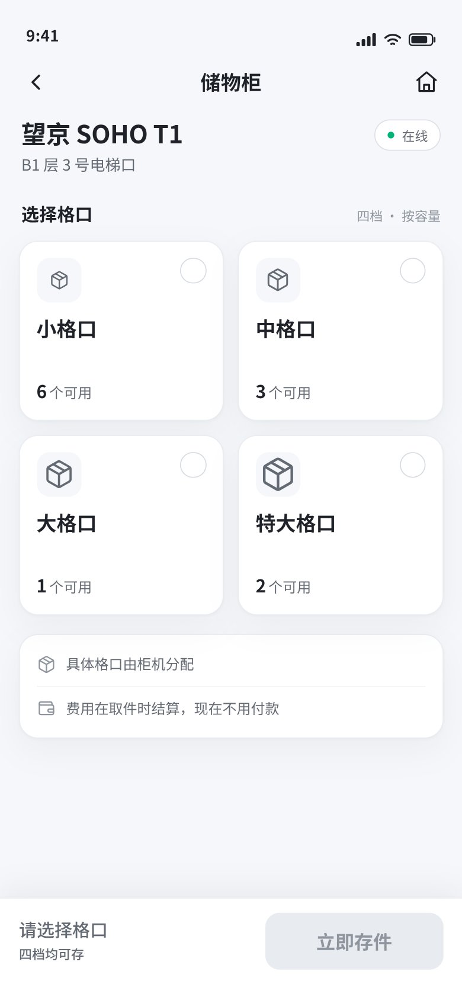
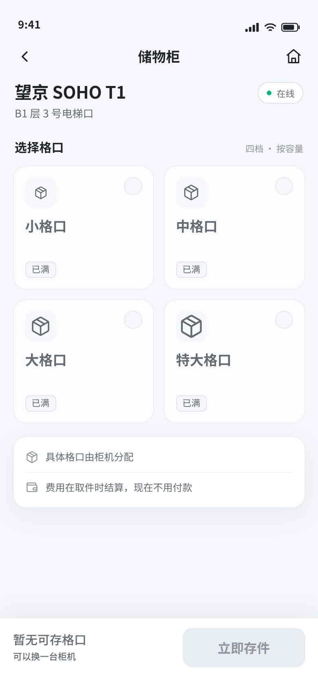
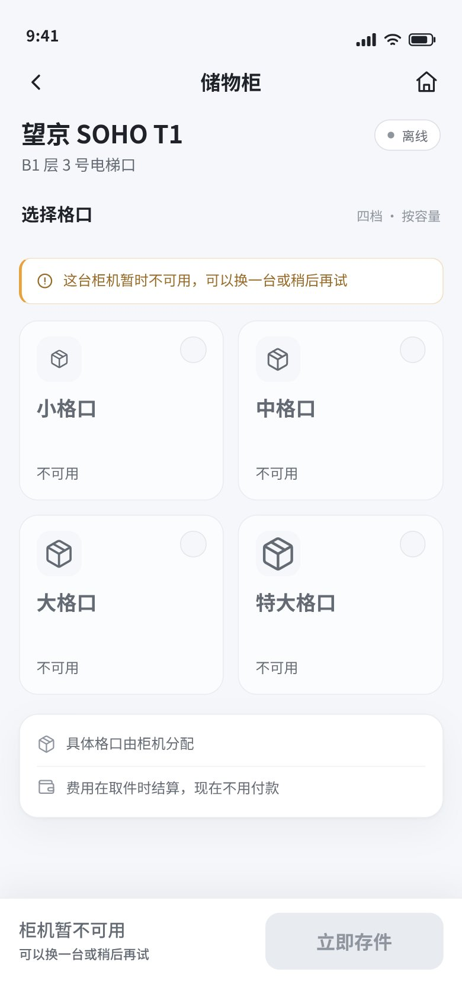
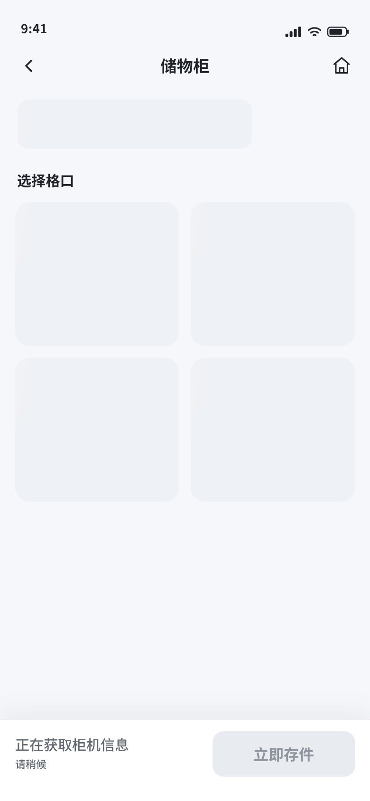
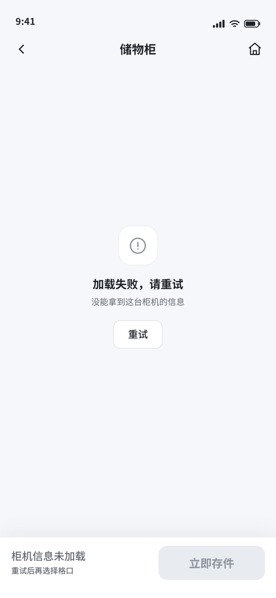
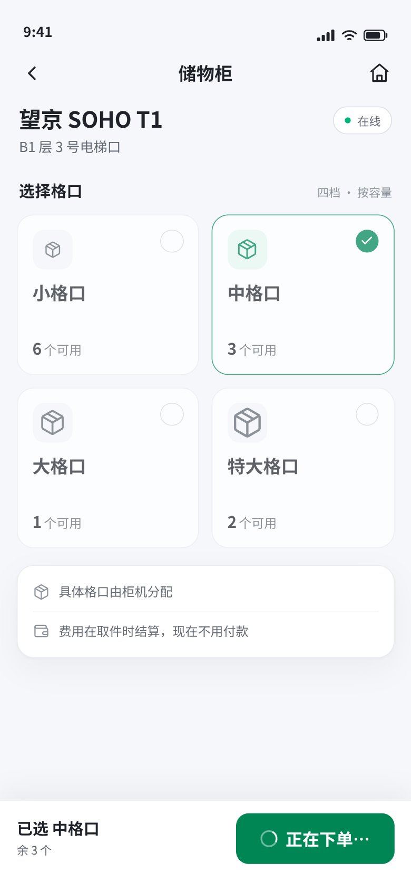
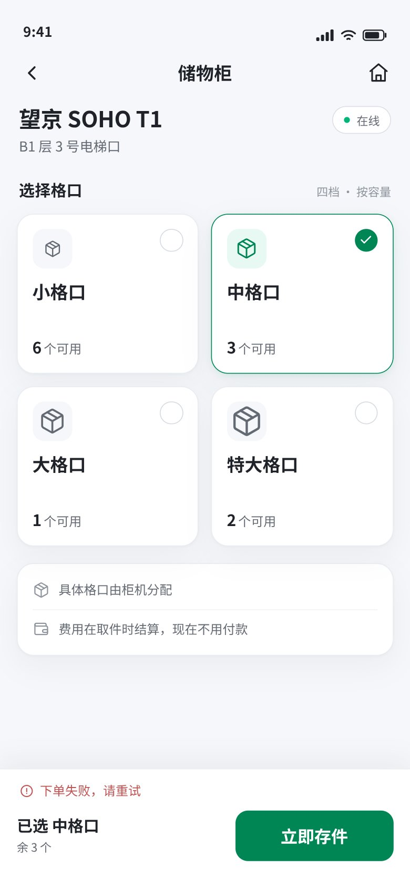
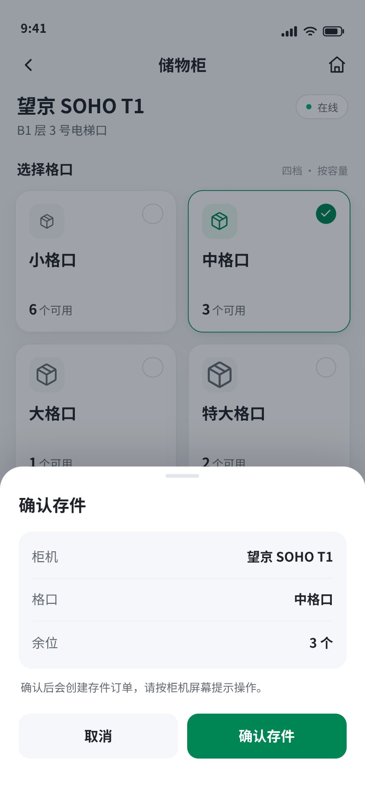
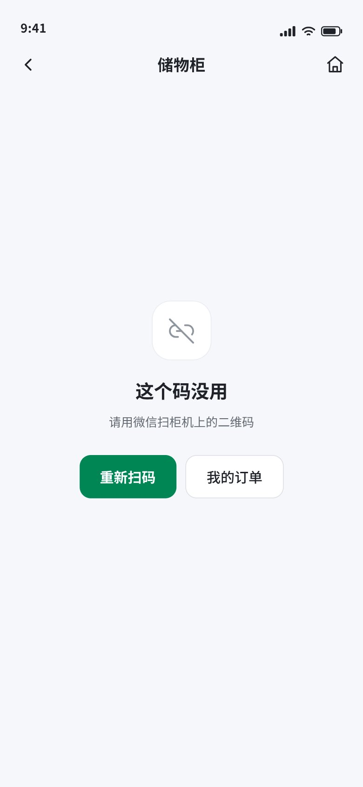

PROTOTYPE · THROWAWAY
结论：A · 2×2 网格 / 首屏不预选 / 二次确认 / 只写档名与余位
柜机页：四档格口选择 +「立即存件」底部条
三个结构不同的变体，共用同一份数据与状态模型。画面可直接点击：选卡、切变体（手机页面底部黑色胶囊）、打开二次确认。
真实入口：phone.html?view=grid|scroll|list&state=…。
A · 2×2 网格打开
B · 横向滑动打开
C · 纵向列表打开
状态
同一套卡片在不同响应下的样子。状态由 ?state= 切换，截图均为 390×844。

未选择 · CTA 置灰

四档已满 · 正常响应

柜机离线 · 页内说明

加载中 · 骨架屏

加载失败 · 重试

提交中 · 防重复

下单失败 · 底部条内提示

二次确认 · 可选路径

入口失效 · 沿用既有页面
本原型回答
- 四档卡用哪种布局（网格 / 横滑 / 列表）
- 选中、售罄、离线、加载、失败时卡片与底部条怎么变
- 底部条左侧能说什么（不能是金额）
- 点「立即存件」是直接下单还是二次确认
本原型不回答
- 容量文案的最终来源：没有尺寸字段，卡片只写档名与余位
- 具体格口位置：
cellNo 下单前拿不到，页面不承诺
- 预约入口的落位：现有页面有「预约」，本票未覆盖
- 视觉 token 最终值：沿用 #49 建议，等该票定稿